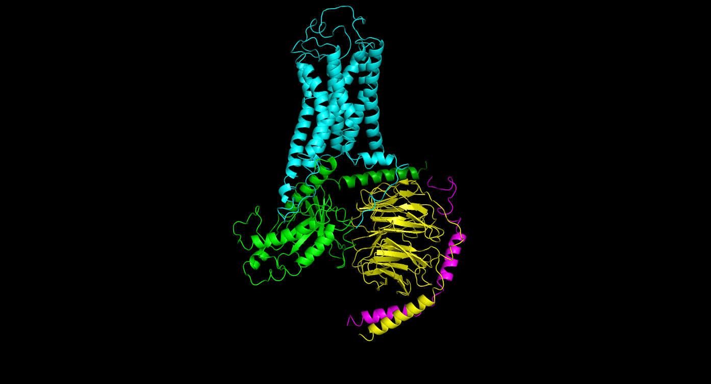

Research in our laboratory focuses on translating basic molecular insights into clinical applications in neuropsychiatric disorders and therapeutics. We integrate computational, biophysical, and pharmacological approaches to understand the structure-function relationships of key neuropsychiatric drug targets. Our research encompasses the following areas:
By combining molecular-level insights, computational modeling, and pharmacological studies, our group aims to accelerate the development of safe, effective therapies for patients with mental disorders.
Funding Sources